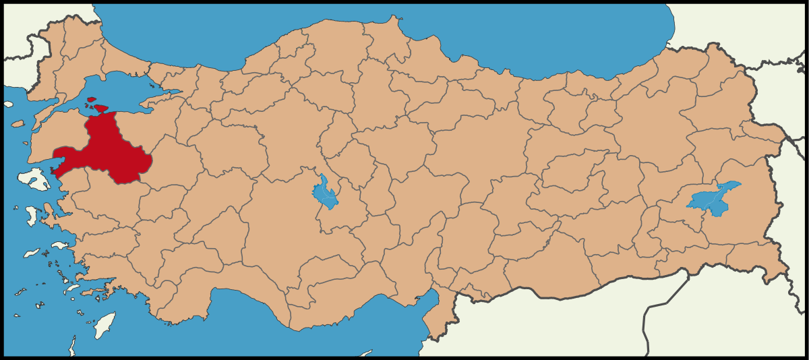

Balıkesir'in Genel Tarihi
Balıkesir, Türkiye'nin Marmara Bölgesi'nin güneyinde yer alan ve zengin tarihiyle dikkat çeken bir ildir. Balıkesir'in tarihi, antik çağlardan günümüze kadar uzanan geniş bir dönemi kapsar ve bu süre zarfında birçok medeniyete ev sahipliği yapmıştır.
Antik Çağ
Balıkesir ve çevresi, antik çağlarda çeşitli uygarlıkların yerleşim alanı olmuştur. Bölgenin bilinen en eski sakinleri Misyalılar ve Pelasglar'dır. Antik dönemde, bölgenin en önemli şehirlerinden biri olan Kyzikos (bugünkü Erdek yakınlarında) ve Daskyleion (bugünkü Bandırma yakınlarında) önemli ticaret ve kültür merkezleriydi. Kyzikos, özellikle Roma İmparatorluğu döneminde büyük bir zenginlik ve refah yaşamıştır.
Roma ve Bizans Dönemi
Roma İmparatorluğu döneminde Balıkesir, Roma'nın Anadolu'daki önemli şehirlerinden biri olmuştur. Roma İmparatorluğu'nun ikiye bölünmesiyle birlikte Bizans İmparatorluğu'nun hâkimiyeti altına giren Balıkesir, bu dönemde dini ve ticari açıdan önemli bir merkez olmayı sürdürmüştür. Bizans döneminde, bölge sık sık Arap akınlarına maruz kalmış ve bu nedenle savunma amacıyla birçok kale inşa edilmiştir.
Selçuklu ve Osmanlı Dönemi
yüzyılda Selçuklu Türklerinin Anadolu'ya gelmesiyle birlikte, Balıkesir ve çevresi de Türklerin hâkimiyetine girmeye başlamıştır. Selçuklu İmparatorluğu'nun zayıflamasıyla birlikte, Balıkesir Karesioğulları Beyliği'nin yönetimine girmiştir. 14. yüzyılda Osmanlı İmparatorluğu'nun genişlemesiyle birlikte Karesioğulları Beyliği, Osmanlı topraklarına katılmış ve Balıkesir Osmanlı hâkimiyeti altına girmiştir.
Osmanlı döneminde Balıkesir, tarım ve ticaret
açısından önemli bir merkez haline gelmiştir. Bölgede tarım, özellikle zeytincilik, bağcılık ve hayvancılık gelişmiştir. Ayrıca, Osmanlı döneminde yapılan cami, medrese ve han gibi yapılar, Balıkesir'in kültürel ve mimari zenginliğine katkıda bulunmuştur.
Cumhuriyet Dönemi
1923 yılında Türkiye Cumhuriyeti'nin kurulmasıyla birlikte Balıkesir, yeni Türkiye'nin önemli illerinden biri olmuştur. Cumhuriyet döneminde tarımın yanı sıra sanayi ve turizm alanlarında da gelişmeler yaşanmıştır. Balıkesir, doğal güzellikleri, termal kaynakları ve tarihi kalıntıları ile turistik açıdan önemli bir merkez haline gelmiştir.
Modern Balıkesir
Günümüzde Balıkesir, hem Marmara hem de Ege Denizi'ne kıyısı olan nadir illerden biridir. Bu coğrafi konumu sayesinde Balıkesir, önemli bir lojistik ve ticaret merkezi olma özelliğini korumaktadır. Ayrıca, Balıkesir Üniversitesi gibi eğitim kurumları ile de eğitim alanında önemli bir merkezdir. Zengin tarihi ve kültürel mirası, doğal güzellikleri ve stratejik konumu ile Balıkesir, Türkiye'nin önemli şehirlerinden biri olmaya devam etmektedir.
Balıkesir'in Konumu

Balıkesir İlçelerinde Gezilecek Yerler - Sizin İçin Seçtiklerimiz -